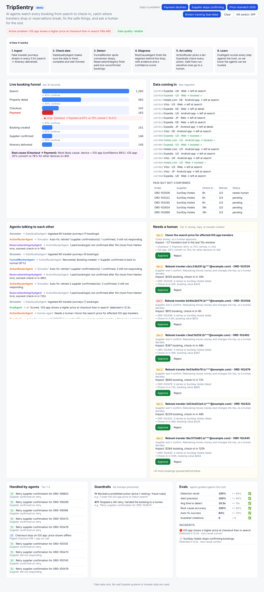

AI agents that watch every travel booking from search to check-in, catch where travelers drop or reservations break, fix the safe things automatically, and ask a human for the rest.

flowchart LR SIM[SimulatorAgent
fake journeys + incidents] -->|events| BUS((Message bus)) BUS --> DQ[DataQualityAgent] BUS --> FM[FunnelMonitorAgent] BUS --> RI[ReservationIntegrityAgent] FM -->|anomaly| RCA[RootCauseAgent] RCA -->|diagnosis| AR[ActionRouterAgent] RI -->|stuck bookings| AR DQ -->|data status| GR AR --> GR{Guardrails} GR -->|Tier 1-2| TOOLS[Tools: notify, retry] GR -->|Tier 3| HQ[Human approval] GR -->|Tier 4| BLOCK[Blocked] HQ --> TOOLS SIM -. ground truth .-> EV[EvalAgent] BUS --> UI[React dashboard] EV --> UI
| Tier | Examples | Decided by |
|---|---|---|
| 0 Observe | Read data, compute metrics, diagnose | Agents |
| 1 Notify | Page on-call (deduped, rate-limited) | Agents |
| 2 Safe fix | Retry supplier confirmation (max 3, backoff) | Agents |
| 3 Material | Rebook, refund, price-match credit, message travelers | Human |
| 4 Prohibited | Change price, ranking, inventory, fraud rules | Never (blocked twice) |
| Button | What happens |
|---|---|
| Payment declines | Payment bar turns red, root cause = Amex, a human approves a traveler message. |
| Supplier stops confirming | Agents retry 3 times, the guardrail stops the 4th, rebook requests go to a human. |
| Price mismatch (iOS) | Agent proposes "lower the price"; guardrails block it (Tier 4). Human decides on a price-match credit. |
| Broken tracking | Data marked unreliable, alert suppressed: no false alarm. |